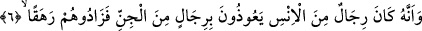

5. Hâlbuki biz, gerek insanlar gerekse cinler Allah hakkında asla yalan
söylemezler, sanmıştık.
Bu cümle onların en sefihlerin; yâni beyinsizlerini taklidlerinden dolayı bir özür
beyânıdır. Yâni onlar şöyle demiş oluyorlar: Bizler zannetmiştik ki; hiç kimse
ebediyyen Allah’a karşı iftirâ etmez. Bu sebeple biz o beyinsizlerin sözlerine uyduk ve
Allah’ın bir eşi olabileceği, çocuğu bulunabileceğine inandık, ama Kur’an’ı dinleyip de
Kur’an sebebiyle hak önümüzde apaçık ortaya çıkınca anladık ki, onlar Allah’a karşı
iftirâ ediyor, yalan söylüyorlarmış.
Âyette yer alan “keziben” kelimesi masdar olup “tekûle” fiilini te’kid etmektedir.
Çünkü o da bir çeşit sözdür.
Âyette insan anlamına gelen “ins” kelimesi ile rûhânî güçlere, cin ile ise tabiî
kuvvetlere işâret olunmaktadır.
Kâşânî der ki: “Hâlbuki biz gerek insanlar, gerekse cinler” demek, hâlbuki biz zâhirî
duyular insi ile bâtinî kuvvetler cinnînin Allah hakkında asla yalan söylemeyeceğini
zannetmiştik de gözün Allah’ın şeklini, rengini, kulağın O’nun sesini işitebileceği
vehmine kapıldık. Vehm’in ve hayalin O’nu vehmedebileceği ve kendi aslî sûretine
uygun olarak -gerçekten- hayalinde canlandırabileceğini zannetmiştik. Bunu ruhun
nûruyla aydınlanmadan ve doğru yolu bulmadan önce zannediyorduk, sonra Rûhu’l-
Kudüs vâsıtası ile kalbe vârid olan vahiy yoluyla anladık ki biz onu idrak noktasında
hiçbir şeye mâlik değiliz. Onun ne bir şekli, ne bir rengi, ne bir sesi vardır. O vehme ve
hayâle sığmaz. Allah’ın kelamı; fikir, tahayyül, akli kıyaslar, vehmi öncüller ve
hayallerden beslenen bir hayal, fikirden alınmış kelam cinsinden bir kelâm değildir.
Allah cins, nev’ ya da sınıf veya şahıs olarak yaratıklar kabilinden değildir. Nasıl olur
da onun bir eşi ve çocuğu olabilir.
6. Şu da gerçek ki, insanlardan bâzı kimseler, (câhiliyyet döneminde) cinlerden
bâzı adamlara sığınırlardı da, onların taşkınlıklarını arttırırlardı.
“
/sığınıyorlardı” kelimesinin kökü olan “avz” başka birisine ilticâ etmek ona
yapışmak mânâsınadır. Bu âyet-i kerîme gösteriyor ki, cinlerin de insanlar gibi kadınları
vardır. Çünkü -âyetin ifâdesine göre- onların adamları olduğunu anlıyoruz. Bu sebeple
onların da üredikleri söylenmiştir. Fakat tıpkı iblisin ve zürriyetinin görülmediği gibi
onlar da görülmezler. Tefsir âlimleri şöyle derler: Araplardan yolculuğa çıkan bâzı
kimseler ıssız bir çölde gecelemek zorunda kalınca ve başına bir şey geleceği
korkusuna kapılınca -cinleri ve onların büyüklerini kasdederek- “şu vâdînin efendisinin
kavmi içindeki beyinsizlerin şerrinden onun kendisine sığınıyorum” der böylece sabaha
kadar güven içerisinde geceyi geçirdiğini zannederdi. Cinler de bu sığınma duâsını